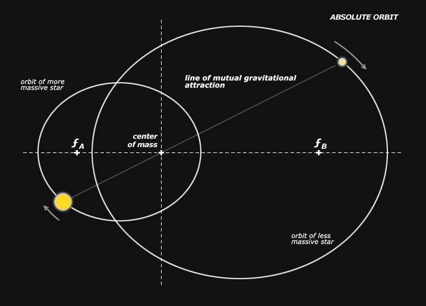
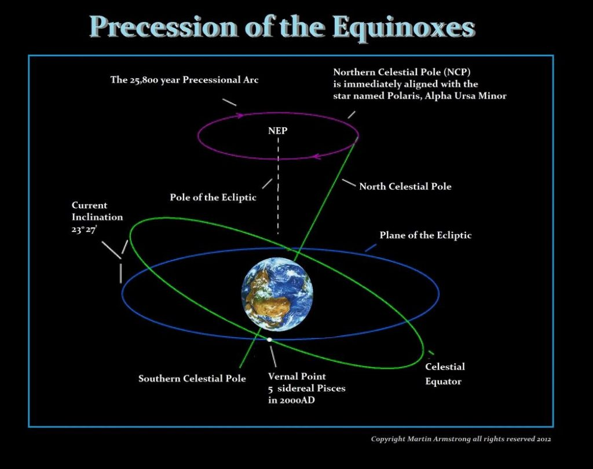

Could our solar system resemble most other visible stars in our galaxy? As our galaxy is filled with solar systems comprised with multiple stars, it has always seemed strange that our solar system would be so unusual.
Strange. Or perhaps, unique and special.
Well, there is evidence that our Sun has a companion. It’s a very dim brown dwarf, tiny and out on the fringes of our solar system in the Oort cloud. That would make it a Binary Star System.
Binary classifications Binary stars are two stars orbiting a common center of mass. The brighter star is officially classified as the primary star, while the dimmer of the two is the secondary (classified as A and B respectively). In cases where the stars are of equal brightness, the designation given by the discoverer is respected. -Binary Star Systems: Classification and Evolution | Space
Here we talk about it.
First off, it’s pretty unusual for a G-class star to be part of a single-star solar system.
How do we know?
Multiple star systems are common
It has long been the common line that most stars are binary (or multiple). It’s one of those things that astronomers at all levels have a tendency to repeat if only because it has already been said so many times that it’s “obviously” true.
This notion is based primarily on the work of Helmut Abt during the 1960s & 1970s (e.g., Abt, 1961; Abt, et al., 1965; Abt, 1965; Abt & Levy, 1969; Abt & Snowden, 1973, which actually provides evidence to the contrary; Abt & Levy, 1978).
However, Abt only sampled a magnitude-limited population of stars. He only sampled the fairly bright & massive stars.
He did not explore the realm of low mass M-class dwarf stars.
But today we can see that the low-mass stars are far dimmer & far more common than was possible in Abt’s day. Modern surveys commonly sample hundreds of thousands to tens of millions of stars, something Abt could only dream of.
Analysis of those far larger samples now indicates that most main sequence stars are likely to be single than binary or multiple.
For instance, Lada, 2006 shows that 2/3 of all main sequence stellar systems in the Milky Way disk are single stars. Meanwhile, somewhat less than 1/2 of the Hipparcos stars in Lepine & Bongiorno, 2007 are binary or multiple (146 out of 521). Clark, Blake & Knapp, 2011 finds the binary fraction for their sample of SDSS M-dwarfs to be only 3-4%, but also that the total binary fraction goes up with stellar mass).
I think the current trend in “stellar multiplicity studies” shows that multiplicity goes up with stellar mass. The bigger and brighter the star, the greater the probability that it will be part of a multiple star system.
However, most stars are not in binary or multiple systems simply because low mass stars heavily outnumber high mass stars. And they outnumber them a lot!
It is evident that the formation of massive stars (Kratter, 2011; Zinnecker & Yorke, 2007) is somewhat different from the formation of lower mass stars (McKee & Ostriker, 2007) such that multiplicity is more likely in stars higher in mass than the sun.
- O,B,A,F,G,K class stars tend to be part of multiple star systems.
- M and brown dwarfs can, at times, be singular.
- There are all sorts of exceptions to these rules.
Anyways, it just seemed strange to me that our sun, Sol is a singular G3 star with no companion. It’s the only one in our “neck of the woods”. In fact, I am unaware or any other G class star that does not have a companion.
It’s just odd.
A Brown Dwarf Companion
Thus, our sun (our star), Sol may be perturbing the orbits of two different groups of long-period comets that reside in the outer reaches of the Oort Cloud.
This gravitational action is causing two groups of comet (clusters) that normally reside in the Oort cloud to be pulled into the inner Solar System. This action is done with the assistance of galactic tidal forces.
Two teams have come to this conclusion independently.
- John B. Murray (UK)
- John J. Matese (US)
Calculations in 1999 by John B. Murray of the United Kingdom focus on a smaller region centered around Constellation Delphinus at an estimated distance of 32,000 AUs (John B. Murray, 1999).
The U.S. team (led by John J. Matese) most recently estimated that the substellar object (proposed to be named Tyche, the sister of Nemesis) may have a mass around one to four Jupiter-masses in the innermost region of the outer Oort Cloud, possibly orbiting Sol at around 10,000 to 30,000 AUs depending on its actual mass (Matese et al, 2010; and Lisa Grossman, Wired Science, November 29, 2010).

While some astronomers have speculated that Matese and Murray are being misled by random statistical fluctuations or the past gravitational effects of passing stars, Matese believes that confirmation through direct observation can be achieved by NASA with its Wide-field Infrared Survey Explorer (WISE) satellite.
On May 25, 2011, at the 218th American Astronomical Society Meeting, Ned (Edward L.) Wright, principal investigator of the WISE Mission, noted that Tyche might be detectable as a “possible low-mass brown [dwarf]” in observational data already collected by WISE (now being processed) if it has at least two Jupiter-masses (AAS presentation abstract by Lissauer et al, 2011; and John Matson, blog at Scientific American, May 27, 2011).
The hypothesized object appears to have a mass smaller than one controversial definition for brown dwarfs specifying a minimum mass of at least 13 Jupiters (so that deutrium fusion can be sustained).
According to Matese, the objects current location in the outer Oort Cloud suggests that it did not form in Sol’s proto-planetary disk. Hence, either the object formed independently from fragmentation of the original Solar nebula, or the object was ejected from another star system and subsequently captured by the Sun (possibly as early as Sol was born in the crowded environs of its original star-forming cluster).
Dark and Golden Ages common in the lore of ancient cultures.
A book titled “Lost Star of Myth and Time” takes a good hard look at history and modern astronomical theory.
In it, the author makes a compelling case for the profound influence on our planet of a companion star to the sun. The author and theorist, Walter Cruttenden, presents the evidence that this binary orbit relationship may be the cause of a vast cycle human observed change. Change that is associated with the Dark and Golden Ages common in the lore of ancient cultures.
Researching archaeological and astronomical data at the Binary Research Institute, Cruttenden concludes that the movement of the solar system plays a more important role in life than people realize.
As such, he challenges some preconceived notions:
- The phenomenon known as the precession of the equinox, fabled as a marker of time by ancient peoples, is not due to a local wobbling of the Earth as modern theory portends, but to the solar system’s gentle curve through space.
He argues that this movement of the solar system occurs because the Sun has a companion star. And this effect is due to a common center of gravity. Which is typical of most double star systems. The grand cycle–the time it takes to complete one orbit––is called a “Great Year,” a term coined by Plato.
Cruttenden explains the effect on earth with an analogy:
"Just as the spinning motion of the earth causes the cycle of day and night, and just as the orbital motion of the earth around the sun causes the cycle of the seasons, so too does the binary motion cause a cycle of rising and falling ages over long periods of time, due to increasing and decreasing electromagnet effects generated by our sun and other nearby stars."
While the findings in Lost Star are controversial, astronomers now agree that most stars are likely part of a binary or multiple star system.

Dr. Richard A. Muller, professor of physics at UC Berkeley and research physicist at Lawrence Berkeley National Laboratory, is an early proponent of a companion star to our sun; he prefers a 26 million year orbit period. Cruttenden uses 24,000 years and says the change in angular direction can be seen in the precession of the equinox.
Nibiru
Enter Zecharia Sitchin. Zecharia Sitchin was a historian who translated ancient Sumerian texts. The translations, no matter how hard he tried, always defined the establishment of the Sumerians as cultivated from the “Gods”. Of which, the “Gods” came from a planet within the solar system, known as the “12th planet” or the “tenth planet” depending on how you look at the writings. Of which Sitchin gave the name “Nibiru”.
He wrote a complete library of books on the subject.
The Earth Chronicles Series The 12th Planet Year of Publication: 1976 This is the first volume of the series that puts forth the view that humanity was the creation of a group of aliens who came to Earth, some time between 450,000 BCE and 13,000 BCE. The book tells us how the aliens mixed their own DNA with that of the proto-humans to create a superior race of the Homo sapiens, to work for the mining enterprises they had set up on Earth. The Stairway to Heaven Year of Publication: 1980 This second volume of the series ponders on the mystery of immortality. It seeks to unravel the secrets of alien landings on Earth, stating that the Anunnaki gods may have had a spaceport in the Sinai Peninsula of Egypt, where they frequently landed―”Those Who from Heaven to Earth Came.” He also puts forth a thought that the Pyramid of Giza may have been the Pharaoh’s entrance to the world of the immortal gods, which he aimed to enter in his afterlife. The Wars of Gods and Men Year of Publication: 1985 Sitchin begins this volume by saying that the Sinai spaceport was destroyed by nuclear weapons some 4,000 years ago. The book goes on to describe the violent beginnings of humanity on Earth, and how these power conflicts had begun ages before on another planet. The volume takes references from ancient texts, and attempts to reconstruct epic events like The Great Flood. The Lost Realms Year of Publication: 1990 Another well-researched volume in the series, The Lost Realms seeks to uncover the mysteries of ancient civilizations. The book describes how, in the 16th century, the Spaniards came to the New World in quest of the legendary City of Gold, El Dorado, and found instead, the most inexplicable ancient ruins in the most inaccessible of places. He further put forth the idea that the so-called pre-Columbian people―Mayans, Aztecs, Incans, etc.―might, in fact, have been the fabled Anunnaki. When Time Began Year of Publication: 1993 Through this book, Sitchin attempts to draw correlations between the various events in several millennia, which helped shape the human civilization on Earth. He stresses on the idea that the human race has progressed and prospered with the help of ancient aliens, who left behind several impressive and imposing structures, which testify their genius to this day. The Cosmic Code Year of Publication: 1998 Yet another engaging volume, The Cosmic Code delves in the idea that the human DNA, which was created by the ancient aliens, is in fact, a cosmic code that connects Man to God and the Earth to Heaven. He refers to writings on ancient prophesies, and proposes that this cosmic code is key to several secrets related to the celestial destiny of man. The End of Days: Armageddon and Prophecies of the Return Year of Publication: 2007 In this last volume of the Earth Chronicles, Sitchin stresses on the idea that the past is very similar to the future. He attempts to put forth compelling evidence that the fate of man and that of our planet depends on a predetermined celestial time cycle, and if we understand the past properly, it is also possible to foretell the future. The Companion Volumes Genesis Revisited: Is Modern Science Catching Up With Ancient Knowledge? Year of Publication: 1990 Sitchin wrote this first companion volume to his Earth Chronicles series, in which he attempts to establish, in the light of ancient as well as modern evidence, that all the advances made by humans today were actually known to our ancestors, millions of years ago. Divine Encounters: A Guide to Visions, Angels and Other Emissaries Year of Publication: 1995 This book seeks to tackle the issue of the possible links between humans and the so-called divine beings. Sitchin refers to several Biblical stories in his attempt to establish a probability of an interaction between Anunnaki and the humans, thus, also offering an explanation to the UFO sightings in recent years. The Lost Book of Enki: Memoirs and Prophecies of an Extraterrestrial God Year of Publication: 2001 This companion volume attempts to reveal the actual identity of the Anunnaki―the first gods of mankind according to the Sumerian mythology. Sitchin has taken efforts to explain the reason behind the creation of humans, and the probable existence of the knowledge of genetic engineering, millions of years ago. The Earth Chronicles Expeditions Year of Publication: 2004 This book is Zecharia Sitchin’s autobiographical account of his various expeditions to the ancient and relatively modern archaeological sites in quest of the probable connection between humans and extraterrestrials. He presents compelling evidence to state that ancient myths are, in fact, recollections of real events of the past. The book also contains many photographs from the author’s personal collection. Journeys to the Mythical Past Year of Publication: 2007 A continuation of the earlier volume, The Earth Chronicles Expeditions, this book talks about some more investigations and discoveries of Sitchin, and how all these experiences inspired him to write his Earth Chronicles. This autobiographical account takes us to several interesting places right from Egypt to the Vatican to the Alps and Malta, and attempts to list some mind-stirring facts. The Earth Chronicles Handbook: A Comprehensive Guide to the Seven Books of The Earth Chronicles Year of Publication: 2009 This is an encyclopedic compilation that is meant to serve as a navigational tool for the entire Earth Chronicles series. This is a must-have volume, especially if you are reading the series without any background knowledge. There Were Giants Upon the Earth: Gods, Demigods & Human Ancestry: The Evidence of Alien DNA Year of Publication: 2010 This volume attempts to present supporting evidence for the author’s assertion in the Earth Chronicles that the human DNA was genetically engineered by the aliens. In the light of ancient writings and artifacts, Sitchin not only tries to reveal the DNA source, but also to provide proof of alien presence on Earth millions of years ago. The King Who Refused to Die: The Anunnaki and The Search for Immortality Year of Publication: 2013 This is the last book authored by Zecharia Sitchin, which attempts to reconstruct the famous epic of Gilgamesh in the wake of his own findings. The novel tells a tale of ancient Sumerian ceremonies, love and betrayal, gods among men, travels from one planet to the other, and the age-old thirst of humans for immortality. The book was published after Sitchin’s death.
The core premise he has made in his writings is that there is a 10th Planet (again, including Pluto) in our solar system with an elliptical orbit of about 3600 of our years.
People from Nibiru came to Earth and discovered the gold they needed to help repair their atmosphere and they began mining it. Much of the knowledge of these ancient people, which they knew because the Anunnaki (those who from heaven to Earth came) told them, has come true, including the color and size of Neptune and Uranus, and the very existence of the outer planets, long before our telescopes could find them. Scientists even suspect another large object in the Kuiper Belt, which might be Nibiru.
Perhaps Nibiru isn’t a planet in orbit around our sun, but rather a binary companion to our star. If so, then that would explain a lot.
Conclusion
Others have come to the conclusion that there are large planet sized objects out in the Oort cloud. The evidence is there from;
- Historical writings.
- Observations in the orbits of comets.
- The precession of the equinox.
If accurate, then this means that the solar system is typical. And that if there is a brown dwarf sized body out in the Oort cloud, then it could very well shelter earth-sized rocky moons (planets) in orbit around it.
While it would be impossibly dim to see with human eyes on earth, to a person living upon a earth-sized planet around this brown dwarf, they would have evolved to see in the infrared, and could have easily adapted to the point where they could have obtained space flight millennia ago.
And perhaps, just perhaps, flew to their nearest stellar neighbor millions of years ago; our Sun.
This idea, and this concept would explain a lot of mysteries.